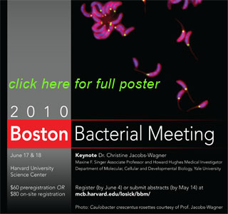

News Archives : 2010 : 16th Annual Boston Bacterial Meeting to be Held at Science Center June 17-18
by Beth Shank
June 4, 2010
The 2010 Boston Bacterial Meeting (BBM) will take place on Thursday, June 17 and Friday, June 18 at the Harvard University Science Center. The meeting will feature 25 oral presentations and more than 60 poster presentations by students and postdocs representing diverse areas of research, including bacterial molecular and cellular biology, development, ecology and evolution, and pathogenesis. The BBM2010 Keynote Address will be delivered by Dr. Christine Jacobs-Wagner, Maxine F. Singer Associate Professor at Yale University and Howard Hughes Medical Institute Investigator.
The BBM was founded in 1995 by two former Losick lab postdocs, Kit Pogliano and Karen McGovern, with the goal of bringing together the community of bacteriologists from the greater Boston area to present their work and share ideas. Now in its 16th year, the BBM has proven to be a consistently vibrant meeting, attended not only by scientists from the Boston area, but also those from further reaches of New England, including New Hampshire, Connecticut, and New York.
In keeping with its roots, every detail of the meeting is planned and organized by graduate students and postdocs from Harvard (from both FAS and the Medical School), Tufts, MIT, and Northeastern. The chair of the BBM2010 organizational committee is Katherine Price, a graduate student in Andrew Camilli’s lab at Tufts University.
MCB has provided significant support to BBM: Richard Losick was instrumental in helping found BBM and continues to be an extraordinarily supportive faculty sponsor; Lilah Rahn-Lee (Losick lab), Thomas Norman (Losick and Paulsson labs), and Valerie L. Pivorunas (Burton lab), all serve on the BBM2010 organizational committee; and Jennifer Perry in the MCB Financial Office has been indispensable in handling BBM transactions. BBM2010 is sponsored, in part, by AstraZeneca, EMDSerono, Integrated DNA Technologies, Microbiotix, Myriant Technologies, New England Biolabs, Novartis, and Pfizer. For additional details on BBM2010 and to register, please visit labs.mcb.harvard.edu/Losick/bbm/